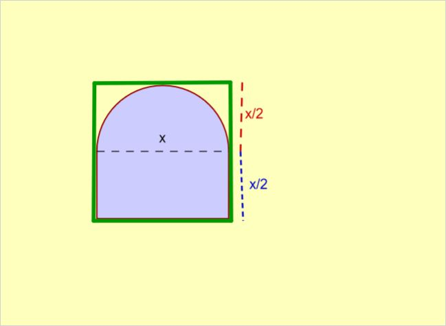

Janelas em Arco Romano

Otimização
Como você observou na parte anterior, a janela com formato de arco romano, de perímetro igual a 400 centímetros e maior área possível tem a base aproximadamente igual a sua altura total.
Na verdade, as medidas da base e da altura total desta janela “ótima” são exatamente iguais. Isto pode ser comprovado através do cálculo algébrico a partir do polinômio do segundo grau que você encontrou para a área da janela. O valor máximo da área corresponde ao vértice da parábola que é o gráfico deste polinômio. Você poderá verificar que para o valor da base x correspondente a este vértice, a altura total da janela tem o mesmo valor da base.
Portanto, a janela romana de área máxima para um perímetro fixo é a que pode ser inscrita em um quadrado, como mostrado na imagem acima. Além disso, note que o semi-círculo superior da janela está inscrito no retângulo que é a metade deste quadrado.